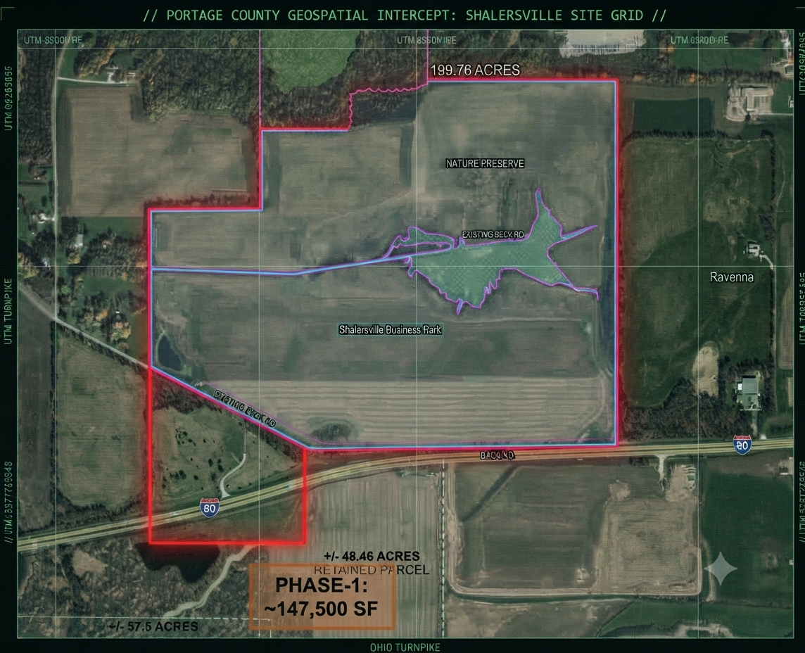

INTEL BRIEF: PARCEL INTERCEPT & ACOUSTIC MONITORING (PART 2)
Published: September 2026 - Wendy DiAlesandro | Classification: Field Evidence & Data Intercept
Detailed master-planned footprint, grid strain analysis, and localized noise audit metrics for the proposed Shalersville data center corridor.
// INTERCEPT: TURNPIKE COMMERCE CENTER PARCEL MAP //

Master-planned parcel layout and phase breakdown for the proposed Bitdeer campus footprint in Portage County. (Click map to open source article)
4. Infrastructure Strain & Comprehensive Environmental Fallout
Large-scale data center developments like the proposed Turnpike Center project bring severe, multi-faceted environmental burdens to local municipalities. Beyond basic land-use changes, industrial server farms introduce aggressive systemic pressures across air, water, land, and community health:
- Massive Power Demand & Grid Strain: Drawing up to 750 megawatts places an astronomical burden on regional transmission lines. This level of power consumption rivals heavy manufacturing hubs or small cities, risking brownouts, mandatory grid upgrades, and shifting transmission infrastructure costs onto local residential utility ratepayers.
- Water Depletion & Chemical Pollution: High-density servers require relentless cooling. Beyond consuming millions of gallons of municipal or well water daily—depleting local aquifers—open and closed-loop cooling systems require chemical treatments (biocides, scale inhibitors, and anti-corrosive agents). Runoff and wastewater blowdown from these systems risk chemical contamination of local watersheds, agricultural drainage tiles, and regional water tables.
- Diesel & Air Pollution: To guarantee uninterrupted 99.999% uptime, massive multi-building campuses require rows of industrial-scale backup diesel generators. During grid failures or mandated monthly testing cycles, these colossal engines burn thousands of gallons of diesel fuel simultaneously, pumping significant nitrogen oxides ($NO_x$), carbon monoxide, and particulate matter ($PM_{2.5}$) directly into rural Portage County air.
- Thermal (Heat) Pollution & Agricultural Impact: Exhaust heat plumes discharged from industrial HVAC chiller yards and cooling towers create hyper-localized microclimate shifts. Surrounding farmlands, crops, and orchards can experience elevated ambient temperatures and altered localized humidity, negatively impacting crop yields and stressing local flora.
- Ecosystem & Wildlife Disruption: The rapid conversion of open farmland and natural habitat into a fenced, floodlit, 15-building industrial fortress disrupts local wildlife corridors. Nocturnal animals, migratory birds, and local fauna face severe habitat fragmentation, compounded by year-round artificial night lighting and constant operational hum.
5. Acoustic Monitoring, Decibel Thresholds & Psychological Fallout
One of the most contentious battles in rural data center developments centers on acoustic pollution. Geis representatives have formally proposed that the campus be permitted to exceed current ambient noise levels by 10 decibels at property boundaries.
Because the decibel scale is logarithmic rather than linear, a 10 dB increase does not just sound "a little louder"—it represents a tenfold increase in physical sound intensity. For rural residents accustomed to quiet nights where ambient background levels hover around 30 to 40 decibels, introducing a continuous industrial hum transforms the acoustic environment entirely.
The engineering profile of a multi-building data center features thousands of high-velocity server rack cooling fans, massive transformer substations, and giant commercial HVAC chillers running uninterrupted 24 hours a day, 7 days a week. This creates a persistent, low-frequency infrasound and humming vibration that travels significantly further than high-pitched noise, penetrating exterior walls and double-paned windows.
The human and domestic cost of persistent low-frequency noise pollution includes:
- Chronic Sleep Deprivation: Low-frequency drone prevents deep REM sleep, leading to long-term health degradation, elevated cortisol levels, chronic fatigue, and neurological strain.
- Property Value Degradation: Rural homeowners investing in peaceful countryside acreage find their properties rendered virtually unmarketable next to an industrial buzzing compound.
- Livestock & Animal Stress: Continuous mechanical noise and ground-borne vibration negatively affect livestock behavior, milk production in dairy cattle, and local wildlife reproduction cycles.
INDEX & VERIFIED SOURCE DIRECTORY (PART 2)
Intelligence and parcel evidence compiled for this acoustic and environmental audit are backed by the following development portfolios and local public records: